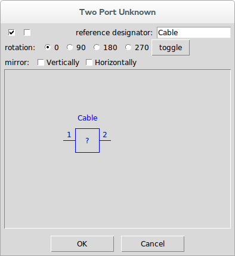

Unknowns
Unknowns are placed in the schematic using Add Unknown↓ or by using Add Part↓ and selecting Unknown↓ devices from the Unknowns category.

Once selected, the reference designator is used as the name for the unknown.

When the deembedding result is calculated, the s-parameters generated will have a default name of the project file concatenated with the reference designator for the unknown(s) in the system.